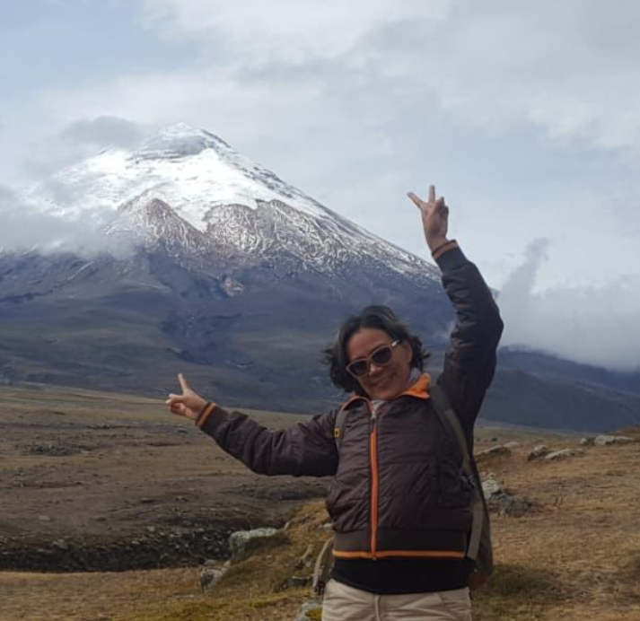

Información de contacto
Este visor ha sido desarrollado por el Grupo de Investigación en Geología Ambiental y Tectónica, y el Semillero de Investigación en Geología Regional y Geoquimica, de la Universidad EAFIT - 2023/2024. Los desarrolladores principales de este portal piloto fueron:

Maria Isabel Marín Cerón
mmarince@eafit.edu.co- Ingeniera geóloga, Universidad Nacional de Colombia - Sede Medellín (2000)
- Mágister en Ciencias de la Tierra e Ingeniería Ambiental, Universidad de Shiman, Japón (2004)
- Especialista en Ingeniería Ambiental y Sanitaria, Universidad del Valle (2005)
- Doctora en Ciencias de la Tierra, Universidad de Okayama, Japón (2007)
- Profesora Asociada de la Universidad EAFIT, Medellín (200X - Presente)
- Minister of Science Fellow at Germany! (2023-2024?)

Santiago Noriega Londoño
santiageo@gmail.com- Ingeniero geólogo, Universidad Nacional de Colombia - Sede Medellín (2013)
- Magister en Ingeniería - Recursos Minerales, Universidad Nacional de Colombia - Sede Medellín (2016)
- Doctor en Ciencias de la Tierra, Universidad EAFIT, Medellín (2023)